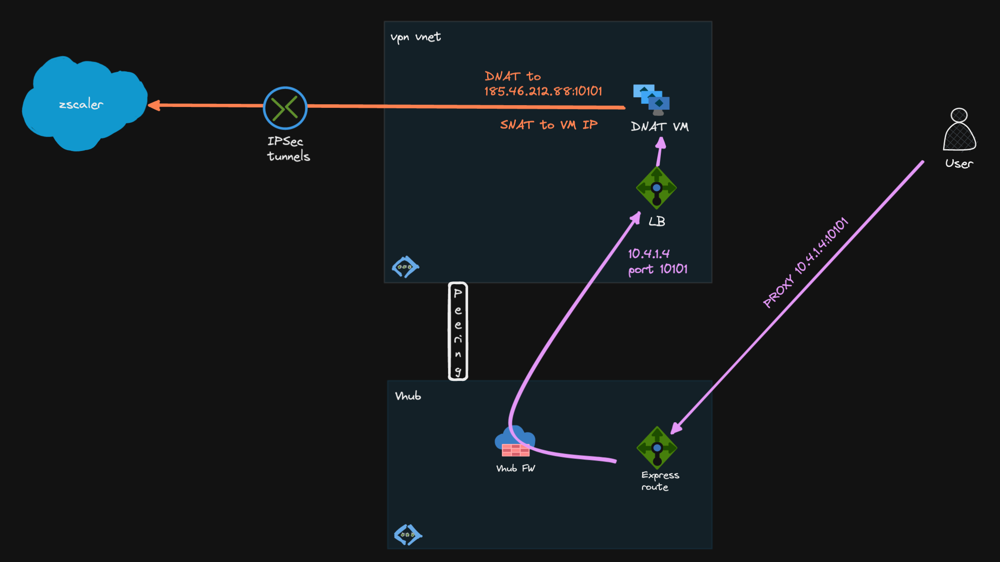
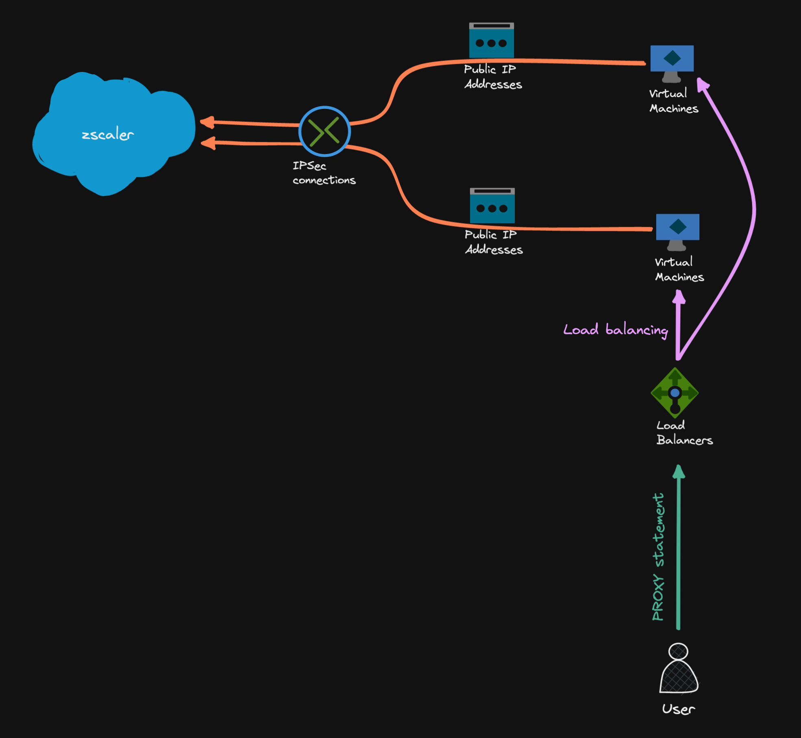

Zscaler Tunnels on Azure - Part 2 - Linux IPSec¶
In my last post, I created a IPSec tunnel to Zscaler using Azure VPN Gateway. Unfortunately, this setup does not work in a Virtual WAN environment, because spoke Vnets can't have Vnet gateways. Using VWAN VPN Gateways would make the VPN tunnel a branch, which is not what we need (I also want to avoid routing Public IPs internally).
Another option would be to use the Linux server to do the DNAT and IPSec tunnel, so this is what we will explore here.
Target Setup¶

Prerequisites¶
- Necessary Azure resources: RG, Vnet, Subnet,...
- Linux server with a public IP
- For multiple servers, each server needs it's own public IP attached, Public Azure load balancer does not work
- Zscaler VPN prerequisites (Static IP, VPN Credentials (PSK), Location)
- NSG to open UDP ports
500,4500from the internet - IP Forwarding enabled for the VM NIC resource
Note: Port 10101 is a Zscaler Dedicated Proxy Port (DPP)5, but also all other available Zscaler ports6 (e.g. 80, 443, 9400, 9480 and 9443) can be used
IPSec on Linux¶
There are multiple options for building IPSec tunnels in Linux: e.g. Libreswan, Strongswan, Openswan
For no particular reason, we will build the site-to-site tunnel with Libreswan4 in this example.
sudo apt install libreswan -y
sudo ipsec verify
Verifying installed system and configuration files
Version check and ipsec on-path [OK]
Libreswan 3.32 (netkey) on 5.15.0-1034-azure
Checking for IPsec support in kernel [OK]
NETKEY: Testing XFRM related proc values
ICMP default/send_redirects [OK]
ICMP default/accept_redirects [OK]
XFRM larval drop [OK]
Pluto ipsec.conf syntax [OK]
Checking rp_filter [OK]
Checking that pluto is running [OK]
Pluto listening for IKE on udp 500 [OK]
Pluto listening for IKE/NAT-T on udp 4500 [OK]
Pluto ipsec.secret syntax [OK]
Checking 'ip' command [OK]
Checking 'iptables' command [OK]
Checking 'prelink' command does not interfere with FIPS [OK]
Checking for obsolete ipsec.conf options [OK]
Linux sysctl Settings¶
# /etc/sysctl.d/99-dnat.conf
net.ipv4.ip_forward=1
net.ipv6.conf.all.forwarding=1
net.ipv4.conf.*.accept_redirects = 0
net.ipv4.conf.*.send_redirects = 0
net.ipv6.conf.all.accept_redirects = 0
net.ipv6.conf.default.accept_redirects = 0
net.ipv4.ip_local_port_range=2048 65535
net.ipv4.ip_local_port_range=2048 65535 extends the standard SNAT port range (~28000 ports on Ubuntu 22.04) to prevent SNAT port exhaustion3
Set PSK¶
After that, set the PSK to be used for the tunnel:
# /etc/ipsec.d/zscaler.secrets
# to use only one PSK for all connections:
%any %any : PSK "$sCAkcUwe434DwK4c54qBLw9H8G"
# to use the PSK for the connection to fra4-vpn.zscaler.net only:
fra4-vpn.zscaler.net : PSK "$sCAkcUwe434DwK4c54qBLw9H8G"
Tunnel Basics¶
Libreswan configuration examples
Zscaler Global Public Service Edge
Important
leftid needs to be set to the VM public IP (this one should also be added to Zscaler Static IPs1)
Route-based VPN¶
- Creates tunnel interface
vti0 - A route-based VPN advertises
0.0.0.0/0on both sides - Disables
vti-routingbecause we don't want to route0.0.0.0/0into the tunnel - Marks the traffic - this mark could be used in
iptablesinconntrackrules - Only traffic directly routed into the tunnel will be forwarded that way
- You need to manually add routes to route traffic into the tunnel:
ip route add 185.46.212.88 dev vti0 - Up/down script advantageous with
leftupdownparameter to add/withdraw route according tovtistate
# /etc/ipsec.d/zscaler.conf
conn zscaler
type=tunnel
authby=secret
auto=start
left=%defaultroute
leftid=45.123.234.123
leftsubnet=0.0.0.0/0
right=fra4-vpn.zscaler.net
rightsubnet=0.0.0.0/0
mark=5/0xffffffff
vti-interface=vti0
vti-routing=no
ikev2=yes
ike=aes256-sha2_256;dh14
ikelifetime=86400s
dpdaction=restart
dpdtimeout=20s
dpddelay=25s
nat-keepalive=yes
phase2=esp
esp=null-md5
salifetime=28800s
Tip
In general, route-based vpn tunnels should be preferred to policy-based vpn tunnels.
For example, route-based tunnels allow you to run routing protocols over the VPN connection. A very good article about the different types here
Policy-based VPN¶
With policy-based VPNs, an IPSec policy is created to route destination 185.46.212.88 into the tunnel:
No vti is created, no adding/removing routes in the routing table
Configuration:
# /etc/ipsec.d/zscaler.conf
conn zscaler
type=tunnel
authby=secret
auto=start
left=%defaultroute
leftid=45.123.234.123
leftsubnet=0.0.0.0/0
right=fra4-vpn.zscaler.net
rightsubnet=185.46.212.88/32
mark=5/0xffffffff
ikev2=yes
ike=aes256-sha2_256;dh14
ikelifetime=86400s
dpdaction=restart
dpdtimeout=20s
dpddelay=25s
nat-keepalive=yes
phase2=esp
esp=null-md5
salifetime=28800s
# state
sudo ip xfrm state
src 165.225.112.12 dst 10.4.1.4
proto esp spi 0x3711f91f reqid 16389 mode tunnel
replay-window 32 flag af-unspec
auth-trunc hmac(md5) 0x3b2c9faf94007bc1efc94ca796b37d37 96
enc ecb(cipher_null)
encap type espinudp sport 4500 dport 4500 addr 0.0.0.0
anti-replay context: seq 0x3, oseq 0x0, bitmap 0x00000007
src 10.4.1.4 dst 165.225.112.12
proto esp spi 0x5f1e1fd1 reqid 16389 mode tunnel
replay-window 32 flag af-unspec
auth-trunc hmac(md5) 0x18bd5dd32c12a72a4c2f5288ab287fe0 96
enc ecb(cipher_null)
encap type espinudp sport 4500 dport 4500 addr 0.0.0.0
anti-replay context: seq 0x0, oseq 0x3, bitmap 0x00000000
# policy
sudo ip xfrm pol
src 0.0.0.0/0 dst 185.46.212.88/32
dir out priority 2097086
tmpl src 10.4.1.4 dst 165.225.112.12
proto esp reqid 16389 mode tunnel
src 185.46.212.88/32 dst 0.0.0.0/0
dir fwd priority 2097086
tmpl src 165.225.112.12 dst 10.4.1.4
proto esp reqid 16389 mode tunnel
src 185.46.212.88/32 dst 0.0.0.0/0
dir in priority 2097086
tmpl src 165.225.112.12 dst 10.4.1.4
proto esp reqid 16389 mode tunnel
<...>
Enable the Tunnel¶
# enable and start service
sudo systemctl enable ipsec.service
sudo systemctl start ipsec.service
# tail -f service logs
journalctl -u ipsec -f
# successful conneciton
pluto[1297]: listening for IKE messages
pluto[1297]: Kernel supports NIC esp-hw-offload
pluto[1297]: adding interface eth0/eth0 (esp-hw-offload not supported by kernel) 10.
pluto[1297]: adding interface eth0/eth0 10.4.1.4:4500
pluto[1297]: adding interface lo/lo (esp-hw-offload not supported by kernel) 127.0.
pluto[1297]: adding interface lo/lo 127.0.0.1:4500
pluto[1297]: adding interface lo/lo (esp-hw-offload not supported by kernel) [::1]
pluto[1297]: loading secrets from "/etc/ipsec.secrets"
pluto[1297]: loading secrets from "/etc/ipsec.d/zscaler.secrets"
pluto[1297]: "zscaler" #1: initiating IKEv2 IKE SA
pluto[1297]: "zscaler": local IKE proposals (IKE SA initiator selecting KE):
pluto[1297]: "zscaler": 1:IKE=AES_CBC_256-HMAC_SHA2_256-HMAC_SHA2_256_128-MODP2048
pluto[1297]: "zscaler" #1: STATE_PARENT_I1: sent v2I1, expected v2R1
pluto[1297]: "zscaler": local ESP/AH proposals (IKE SA initiator emitting ESP/AH
pluto[1297]: "zscaler": 1:ESP=NULL-HMAC_MD5_96-NONE-DISABLED
pluto[1297]: "zscaler" #2: STATE_PARENT_I2: sent v2I2, expected v2R2 {auth=IKEv2 8 prf=HMAC_SHA2_256 group=MODP2048}
pluto[1297]: "zscaler" #2: IKEv2 mode peer ID is ID_IPV4_ADDR: '165.225.112.12'
pluto[1297]: "zscaler" #2: Authenticated using authby=secret
pluto[1297]: "zscaler" #2: negotiated connection [0.0.0.0-255.255.255.255:0-65535 5 0]
pluto[1297]: "zscaler" #2: STATE_V2_IPSEC_I: IPsec SA established tunnel mode {ESP/NAT=>0x6d394066 <0xb319ec97 xfrm=NULL-HMAC_MD5_96 NATOA=none NATD=165.225.112.12:4500 DPD=active}
Troubleshooting IPSec Tunnels¶
sudo journalctl -u ipsec
sudo ipsec whack --status
sudo ipsec whack --trafficstatus
sudo ip tunnel show
# capture IPSec traffic only
sudo tcpdump -ni eth0 esp or udp port 500 or udp port 4500
# capture vti traffic (route-based)
sudo tcpdump -ni vti0
DNAT/SNAT¶
sudo iptables -t nat -A PREROUTING -p tcp -i eth0 --dport 10101 -j DNAT --to-destination 185.46.212.88:10101
sudo iptables -t nat -A POSTROUTING -d 185.46.212.88 -j MASQUERADE
# make iptables rules persistent
# non-interactive mode, saves currently applied rules
echo iptables-persistent iptables-persistent/autosave_v4 boolean true | debconf-set-selections
echo iptables-persistent iptables-persistent/autosave_v6 boolean true | debconf-set-selections
sudo apt install iptables-persistent -y
# list iptables rules of the NAT table:
sudo iptables -nvL -t nat
The following happens here (example for route-based VPN):
Incoming packet on eth0 - 10.4.1.4 on port 10101 (internal PAC file return "PROXY 10.4.1.4:10101" statement)
source: 10.8.0.4:56780
destination: 10.4.1.4:10101 (eth0)
First iptables rule changes the destination to the remote tunnel IP (DNAT, PREROUTING chain)
source: 10.8.0.4:56780
destination: 185.46.212.88:10101 (remote VPN side)
Info
Forwarding decision is taken here -> destination interface is vti0 according to the routing table (that's why we need to set the route)
Second rule masquerades (SNATs, POSTROUTING chain) the packet behind the local interface (eth0) IP
source: 10.4.1.4:43210 (eth0)
destination: 185.46.212.88:10101 (remote VPN side)
Forward the packet into the VPN tunnel (out vti0 interface)
Conntrack2 will keep track of the mapping of original and translated source/destination IP:port tuples
Note
This is the bare minimum iptables config and uses only NAT features. For an architectue deep dive for iptables check here
HA¶
We can only use an internal Azure load balancer, and each VM needs its own public IP.
In this setup, each server builds its own tunnels to Zscaler, and the load balancer distributes load from clients to the backend VMs. Both servers and the public IP resources should be allocated in different Availability Zones.
On the ILB, set up a load balancing rule for TCP port 10101 to the backend VMs. Return the ILB frontend IP in the PAC file statement for the clients. Azure Load balancer will never SNAT, so client IPs are visible on the backend VMs (e.g. for tcpdump to capture)

Netdata Libreswan Monitoring¶
As a bonus, Netdata can natively monitor Libreswan tunnels uptime and bytes in/out
https://learn.netdata.cloud/docs/data-collection/monitor-anything/Networking/Libreswan-IPSec-tunnels
Add the netdata user to /etc/sudoers.d/ to allow monitoring commands:
# /etc/sudoers.d/netdata
netdata ALL = (root) NOPASSWD: /sbin/ipsec whack --status
netdata ALL = (root) NOPASSWD: /sbin/ipsec whack --trafficstatus
# chmod the file
sudo chmod 600 etc/sudoers.d/netdata
Costs¶
Example Costs
VM: Standard_D2sv3 ~$90/month
LB: SKU Standard ~25/month with 1TB traffic forwarding